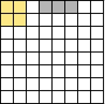
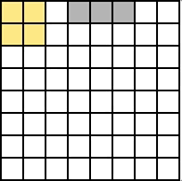
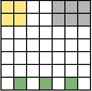
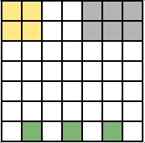

I am a second-year PhD student in EECS at MIT. Previously, I was an MEng student at MIT, working with Armando Solar-Lezama in the Computer Assisted Programming Group, Joshua Tenenbaum in the Computational Cognitive Science Group, and Zenna Tavares at the Zuckerman Institute of Columbia University and Basis Research Institute. For my thesis, I explored the intersection of programming languages, artificial intelligence, and cognitive science, with the goal of developing more human-like AI systems. Specifically, I investigated the hypothesis that program synthesis may be a route to achieving this goal. In a past life, I received my BS degrees in computer science and math from MIT.
Broadly, I am interested in the following areas: program synthesis, neuro-symbolic techniques, probabilistic programs, formal methods, and computational cognitive science.
Feel free to contact me at [first][last]@mit.edu.

MEng Thesis
For my thesis, I worked on modeling the human ability to efficiently learn causal theories – explanations of which stimuli cause which changes in an environment – using program synthesis. For example, children can figure out the causal mechanism underlying a new toy or video game in just a few minutes, a feat woefully out of reach of modern AI systems. By representing a causal model as a program, we take advantage of two key features that standard ML models do not possess: programs' compact, interpretable form and data-efficient learning algorithms.
We developed a simple domain to explore this hypothesis, consisting of Atari-style, time-varying grid worlds. We express causal mechanisms in these worlds using a functional reactive programming language called Autumn, which we designed to concisely capture these dynamics. Some Autumn programs are shown below. Our objective is to synthesize the underlying Autumn program given a short sequence of observed grid frames and user actions.
 



 


While the original motivation behind this project was to develop a proof-of-concept that program synthesis may be an effective model of causal theory induction, our work revealed an interesting story beyond this application. Specifically, we synthesize Autumn programs by combining standard functional synthesis techniques with an automata synthesis approach, which discovers the time-varying latent state in the program. Uniting functional and automata learning in this way seems to apply beyond Autumn to the inductive synthesis of general functional reactive programs. Further, it aligns with the fact that humans perform both stateless (functional) and stateful (automata) reasoning when deriving explanations, suggesting our approach is a step in the right direction towards more human-like AI. Our work is still ongoing, but we are excited to develop these directions further, along with neuro-symbolic extensions.
For more information about this project, check out our upcoming POPL paper or workshop papers on the Autumn system below.
Publications
Ria Das, Joshua B. Tenenbaum, Armando Solar-Lezama, Zenna Tavares.
Combining Functional and Automata Synthesis to Learn Causal Reactive Programs.
ACM SIGPLAN Symposium on Principles of Programming Languages (POPL) 2023. To appear.
[paper]
Ria Das, Joshua B. Tenenbaum, Armando Solar-Lezama, Zenna Tavares.
Combining Functional and Automata Synthesis to Learn Causal Reactive Programs.
Beyond Bayes: Paths Towards Universal Reasoning Systems Workshop, ICML 2022.
[paper, poster]
Ria Das, Joshua B. Tenenbaum, Armando Solar-Lezama, Zenna Tavares.
Synthesis of Reactive Programs with Structured Latent State.
Machine Learning and Causal
Inference Workshop (WHY-21) and Advances in Programming Languages and Neurosymbolic Systems Workshop (AIPLANS), NeurIPS 2021.
[paper, why21 poster, aiplans poster]
Samuel Goldman, Ria Das, Kevin K. Yang, Connor W. Coley.
Machine learning modeling of family wide enzyme-substrate specificity screens. In submission.
[paper]
Zenna Tavares, James Koppel, Xin Zhang, Ria Das, Armando Solar-Lezama.
A Language for Counterfactual Generative Models.
ICML 2021.
[paper, erratum]
Zenna Tavares, Ria Das, Elizabeth Weeks, Kate S. Lin, Joshua B. Tenenbaum, Armando Solar-Lezama.
Causal Inductive Synthesis Corpus.
Computer-Aided Programming Workshop, NeurIPS 2020.
[paper, poster]